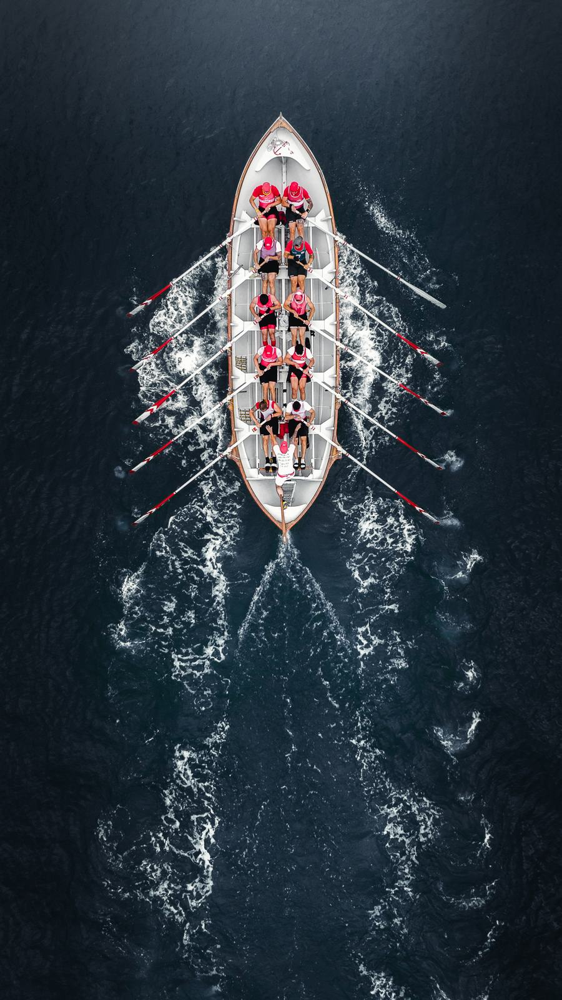
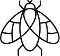
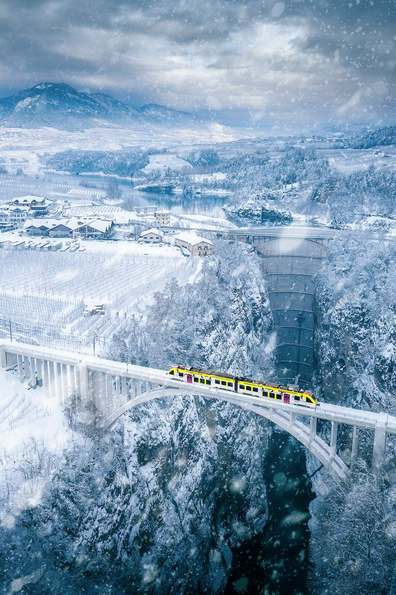
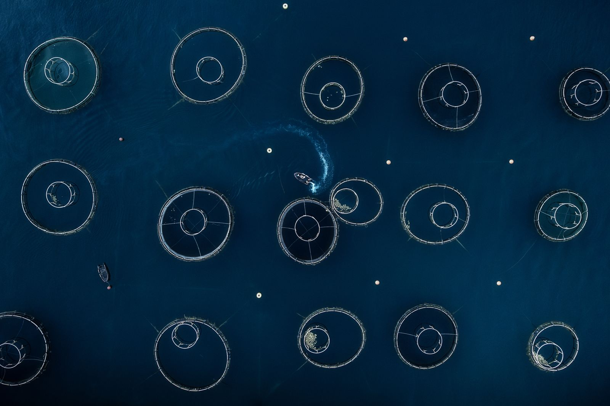
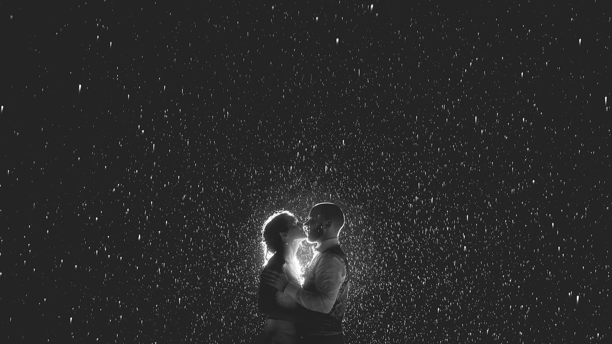
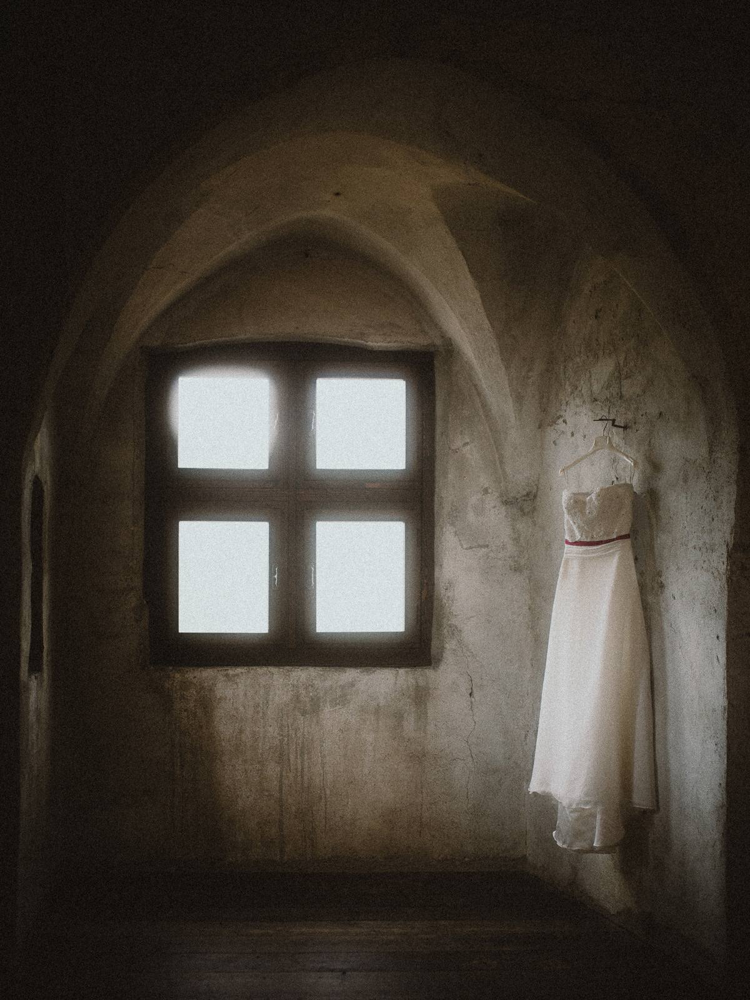
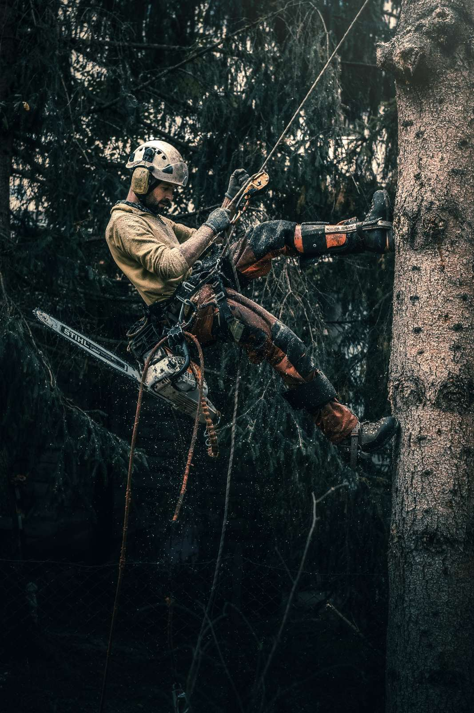
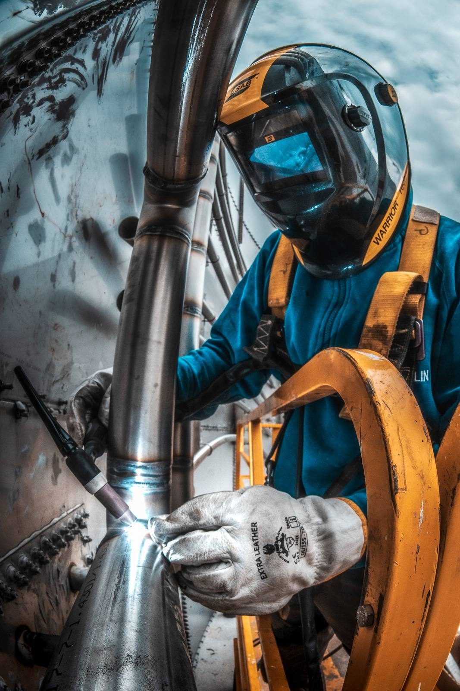
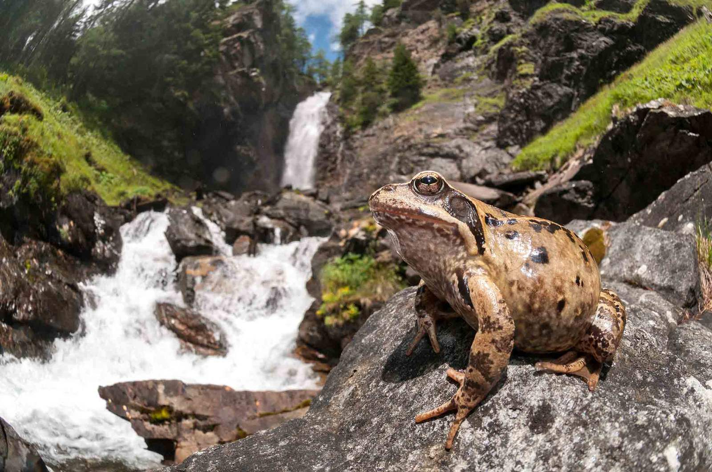

Tutto è più bello visto da lassù
Fotografia aerea con il drone, servizi di matrimonio, foto per le aziende e fotografia naturalistica. Sono Paolo Crocetta e lavoro da Romeno, in Val di Non.


Dal cielo
«È tutta una questione di prospettiva.»
Boschi, laghi, paesi e molto altro. Anche il più comune dei paesaggi di tutti i giorni, dal cielo diventa un'altra cosa.
Fotografia aerea con il drone per eventi di ogni genere, per le aziende, per il turismo e la promozione del territorio.


Matrimoni
Se c'è una storia che deve essere raccontata, è quella del vostro matrimonio.
Una raccolta di immagini semplici ma cariche di emozioni, fatta di cose semplici: sguardi, carezze, piccoli gesti. Per rivedervi come eravate anche a distanza di anni.


Per le aziende
Avete mai pensato al significato della parola «immortalare»?
Vuol dire rendere immortale, tenere nella memoria. Per qualsiasi evento, occasione o momento da ricordare: immagini vive, coinvolgenti, che restano anche a distanza di tempo.


Natura
La natura ha il potere di lasciarci senza parole. Nulla meglio di un'immagine riesce a raccontare un panorama o un animale visto così da vicino.

Ciao, sono Paolo
Sono curioso, socievole, impulsivo e a volte testardo. Ho un drago barbuto e due serpenti.
Legenda
- Sono cresciuto in città, ma il mio cuore appartiene alla montagna.
- Amo camminare per chilometri, soprattutto mentre parlo al telefono.
- Amo la natura, in ogni sua forma.
- Amo fotografare con i piedi per terra, ma anche dal cielo: la macchina fotografica e il drone sono i miei compagni inseparabili.
- Amo il fatto di aver trasformato la mia passione nel mio lavoro.
Hai qualcosa in mente? Scrivimi
Un matrimonio, un evento, il tuo paese o la tua azienda visti dall'alto: raccontami cosa ti serve e ti rispondo io.
Fotografia aerea, naturalistica e servizi di matrimonio
- Fotografo
- Paolo Crocetta
- Dove
- Via IV Novembre 19, 38010 Romeno (TN)
Apri in Google Maps - Telefono
- 340 492 3561
- info@greenfly.it